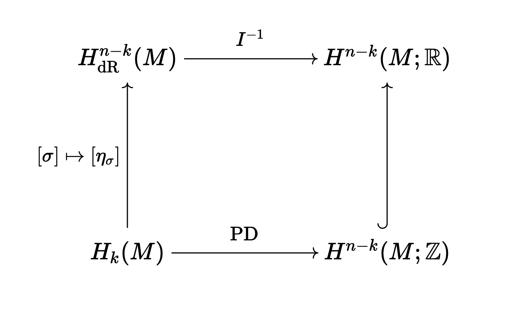

A short comment on the intersection pairing
Table of Contents
Originally posted: August 28th, 2026
1. Introduction
I want to briefly comment of the intersection pairing, and how it may be computed via both algebraic topology and differential topology.
2. The intersection pairing
Let \(M\) be a closed, oriented, smooth \(n\) -manifold. Via the universal coefficients theorem, we have the identification \(H^k(M; \mathbb{R}) \simeq \text{Hom}(H_k(M), \mathbb{R})\). We also know that we have the de Rham isomorphism \(I : H^k(M; \mathbb{R}) \to H^k_{\text{dR}}(M)\) given by
\begin{equation} \alpha([\sigma]) = \int_{\sigma} I([\alpha]) \end{equation}where \([\sigma] \in H_k(M)\), \(\alpha\) is a cocycle representing \([\alpha] \in H^k(M; \mathbb{R})\) and \(\sigma\) is a smooth representative of the homology class \([\sigma]\) (which we can always find). Indeed, it is a fact that the inclusion of smooth chains to chains induces an isomorphism between smooth singular homology and singular homology (see Lee's book). In particular, notice that this implies that if \(\sigma\) and \(\sigma'\) are both smooth cycles and representatives of the same homology class, then \(\sigma - \sigma' = \partial \tau\), where \(\tau\) is some smooth \((k + 1)\) -chain. Thus,
\begin{equation} \int_{\sigma} \omega - \int_{\sigma'} \omega = \int_{\partial \widetilde{\tau}} \omega = \int_{\widetilde{\tau}} d\omega = 0 \end{equation}for any closed form. Therefore, such a map is well-defined. We have two notions of Poincare duality, the one we get from Hatcher and the one we get from Bott-Tu (slightly generalized). Starting with Bott-Tu, we know that we have an isomorphism \(H_{\text{dR}}^{n-k}(M) \simeq H_{\text{dR}}^{k}(M)^{*}\) in which \([\omega]\) is taken to the element \([\eta] \mapsto \int_M \eta \wedge \omega\) of the dual. Thus, given a smooth \(k\) -chain \(\sigma\), there will exist a unique \([\eta_{\sigma}] \in H^{n - k}_{\text{dR}}(M)\) such that
\begin{equation} \int_M \omega \wedge \eta_{\sigma} = \int_{\sigma} \omega \end{equation}for all \([\omega] \in H^k(M)\). This is a bit more general than Bott-Tu, they instead replace \(\sigma\) with \(S\), a smooth, closed embedded oriented submanifold. The reason why this is a strict generalization is that via triangulation, given such an \(S\), we may write down a smooth triangulation for \(S\), which is a smooth \(k\) -chain (where \(k = \dim(S)\)) of the form \(\sigma(S) = \sum_i \sigma_i\) where:
- Each \(\sigma_i : \Delta^k \to S\) is a smooth orientation-preserving embedding
- If \(i \neq j\), then \(\sigma_i(\text{Int}(\Delta^k)) \cap \sigma_j(\text{Int}(\Delta^k)) = \emptyset\).
- \(S = \cup_i \sigma_i(\Delta^k)\)
- \(\partial \sigma(S) = 0\)
Existence of such a triangulation is a fact (but I believe the proof requires some work). It is another fact that \(\int_{\sigma(S)} \omega = \int_S \omega\) for all top forms \(\omega\) on \(S\) (exercise in Lee's book I think). Notice that because \(\sigma(S)\) is a cycle, \([\sigma(S)]\) is an element of \(H_k(S)\). Letting \(y = \sigma_i(x) \in \text{Int}(\sigma_i(\Delta^k))\) be a point, we have the inclusion \((\sigma_i(\Delta^k), \sigma_i(\Delta^k) - \{y\}) \to (S, S - \{y\})\) inducing an isomorphism in homology by excision. We also know that because \(S\) is compact orientable, the map \(H_k(S) \to H_k(S, S - \{y\})\) is an isomorphism for each \(y\) (another one of my blog posts proves this). Finally, the map \((\sigma_i)_{*} : H_k(\Delta^k, \Delta^k - \{x\}) \to H_k(\sigma_i(\Delta^k), \sigma_i(\Delta^k) - \{y\})\) is an isomorphism. Notice that \(\sigma_i : \Delta^k \to S\) defines an element \([\sigma_i]\) of \(H_k(S, S - \{y\})\) equal to \([\sigma(S)]\) in this relative homology group. Moreover, \([\sigma_i] = (\sigma_i)_{*} [\text{id}]\) so it is in fact a generator. Therefore, \([\sigma(S)]\) must be a generator for \(H_k(S)\): it is a fundamental class.
Returning to Poincare duality, uniqueness implies that \([\eta_{\sigma(S)}] = [\eta_S]\). So, the version of duality we consider is a strict generalization. Also note that via the same logic as was applied earlier, the map \(\sigma \mapsto [\eta_{\sigma}]\) actually induces a map \(H_k(M) \to H^{n - k}_{\text{dR}}(M)\) via selecting a smooth representative, and noticing that any two choices \(\sigma\) and \(\sigma'\) will yield \(\int_{\sigma} \omega = \int_{\sigma'} \omega\) for all \(\omega\).
In addition to this form of duality, we have the Hatcher version: the map \(D : H^k(M; R) \to H_{n - k}(M; R)\) with \(D([\alpha]) = [\alpha] \cap [M]\) is an isomorphism when \(M\) is \(R\) -oriented and \([M]\) is an \(R\) -fundamental class. We will refer to both \(D\) and \(D^{-1}\) as \(\text{PD}\) for "Poincare dual" for \(R = \mathbb{Z}\).
It would be nice for us to understand the relationship between the two kinds of Poincare duality, and how they interact with the de Rham isomorphism. In particular, it would be nice if the following square were to commute:

Suppose this were indeed true. Then, given \([\alpha] \in H^{n - k}(M)\) and \([\beta] \in H^k(M)\), we take \([\sigma] = \text{PD}([\alpha])\) and \([\psi] = \text{PD}([\beta])\) with \(\sigma\) and \(\psi\) smooth representatives. To start, we would immediately have
\begin{equation} \int_M I([\alpha]) \wedge I([\beta]) = \int_M I([\alpha]) \wedge \eta_{\psi} = \int_{\psi} I([\alpha]) = \alpha(\text{PD}([\beta])) = \langle [\alpha] \smile [\beta]), [M] \rangle \end{equation}with \([M]\) the fundamental class of \(M\) compatible with the orientation. This is alreasdy a nice formula. As a cute corollary, notice that we also have
\begin{equation} \int_M I([\alpha] \smile [\beta]) = \int_{\sigma(M)} I([\alpha] \smile [\beta]) = \langle [\alpha] \smile [\beta]), [M] \rangle \end{equation}so the top-forms \(I([\alpha]) \wedge I([\beta])\) and \(I([\alpha] \smile [\beta])\) have the same integral, so they agree at the level of cohomology. So, we have shown that on complementary degrees, \(I\) preserves the product structure of the cohomology rings. In fact, \(I\) preserves this product structure in all degrees and is a ring isomorphism, but I don't know how to prove this (I saw QC say it's true on Math StackExchange, but he also didn't know how to prove it).
Let us further suppose there exist oriented closed embedded submanifolds \(i : \Sigma_a \to M\) and \(j : \Sigma_b \to M\) such that \(i_{*} [\Sigma_a] = [\sigma]\) and \(j_{*} [\Sigma_b] = [\psi]\) where \([\Sigma_a]\) and \([\Sigma_b]\) are fundamental classes. Then the corresponding \(\eta_{\sigma}\) and \(\eta_{\psi}\) are in the same cohomology class as \(\eta_{\Sigma_a}\) and \(\eta_{\Sigma_b}\) respectively, from the earlier discussion. So, we get
\begin{equation} \int_M \eta_{\Sigma_a} \wedge \eta_{\Sigma_b} = \int_M I([\alpha]) \wedge I([\beta]) = \langle [\alpha] \smile [\beta]), [M] \rangle \end{equation}which is the formula connecting the de Rham and the topological intersection pairings (as is introduced in the book of Gompf-Stipsicz). In particular, it is easy (via differential topology and the Thom isomorphism) to interpret the left integral as the signed intersection number of the submanifolds after we homotop them to general position. Very nice! The question now remains: how do we prove commutativity of the square? This boils down to showing that \(I(\text{PD}([\sigma])) = [\eta_{\sigma}]\). This can in turn be reduced to showing that
\begin{equation} \int_{\psi} \eta_{\sigma} = \text{PD}([\sigma])([\psi]) \end{equation}for all \([\psi]\). This is the same as
\begin{equation} \int_M \eta_{\sigma} \wedge \eta_{\psi} = \langle (\text{PD}([\sigma]) \smile \text{PD}([\psi]), [M] \rangle \end{equation}so commutatitivty of the square is actually equivalent to proving equality of the two intersection forms for all smooth chains. Let's try to do the case where \(i_{*} [\Sigma_a] = [\sigma]\) and \(j_{*} [\Sigma_b] = [\psi]\) (i.e. we can always represent any \([\psi]\) by a submanifold). Here, we can say that
\begin{equation} \int_{\psi} \eta_{\sigma} = \int_{\Sigma_b} \eta_{\Sigma_a} = \int_M \eta_{\Sigma_a} \wedge \eta_{\Sigma_b} \end{equation}which is the oriented intersection number of these manifolds (again, we know this from differential topology and the Thom isomorphism). On the other hand,
\begin{equation} \text{PD}([\sigma])([\psi]) = \langle (\text{PD}([\sigma]) \smile \text{PD}([\psi])), [M] \rangle = \langle \text{PD}([\Sigma_a]) \smile \text{PD}([\Sigma_b])), [M] \rangle \end{equation}so it just comes down to proving that \(\text{PD}([\Sigma_a]) \smile \text{PD}([\Sigma_b])\) is the Poincare dual of the \(0\) -chain which is the formal signed sum of intersection points of \(\Sigma_a\) and \(\Sigma_b\) (after they are moved to general position). I found some notes of Hutchings proving this fact directly, it's essentially the Thom isomorphism in the topological category. So, at the very least, we have equality of the topological and smooth intersection pairings in the \(4\) -dimensional case (as there, we can in fact always represent homology classes in \(H_2(M)\) by submanifolds). Adapting the same proof to the case of smooth chains might be possible, one would have to ensure that all of the transversality arguments can be adapted to the category of manifolds with corners (as these are what the constituent simplices in smooth chains are). I don't think I'm going to do this myself, but if anyone has a different way to attack this problem, please let me know!